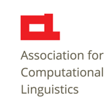

SIGANN
ACL Special Interest Group for Annotation
The Sixteenth Linguistics Annotation Workshop (LAW XVI) will take place in Marseille, France in June, co-located with LREC 2022. The special theme for the workshop is New Frontiers and Paradigms in Linguistic Annotation. Stay tuned for the call for papers!

SIGANN Shared Corpus
SIGANN has identified a 40K corpus consisting of data from the Open ANC, representing a range of genres. As a part of the OANC, the data is unencumbered by licensing or redistribution restrictions.
The SIGANN Shared Corpus is currently being annotated for a wide variety of linguistic phenomena within the Unified Linguistic Annotation (ULA) and ANC Manually Annotated SubCorpus (MASC) projects. Annotations include those of PropBank, NomBank, Penn Treebank, TimeBank, Penn Discourse Treebank, Opinion Annotation, WordNet senses and FrameNet frames.
SIGANN invites the community to contribute annotations of the Shared Corpus, for any phenomenon. Please contact anc [at] cs.vassar.edu for more information. All annotations will be made freely available on this website, in both their original formats and the common GrAF format in which all ANC annotations are represented. Annotations in GrAF format can be merged and output in any of several formats (UIMA CAS, XCES, NLTK, GraphViz, etc.).